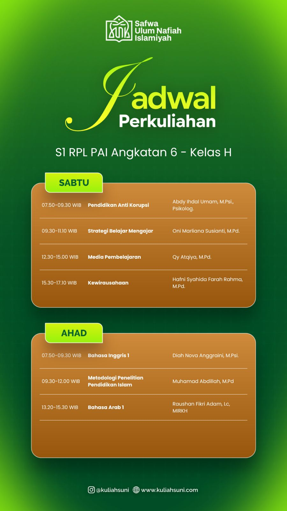

Sabtu • 07.50 WIB
Pendidikan Anti Korupsi
Abdy Ihdal Umam, M.Psi., Psikolog.
Catatan materi pembentukan karakter integritas, nilai-nilai anti-korupsi, dan etika moral dalam pendidikan Islam.
Selamat datang di situs akademik pribadi saya. Web ini difungsikan khusus sebagai wadah pengarsipan ringkasan materi, naskah perkuliahan, dan tugas dari seluruh mata kuliah S1 RPL Pendidikan Agama Islam (Angkatan 6 - Kelas H).

Aulia Rahman
Mahasiswa S1 RPL PAI
Jadwal perkuliahan tatap muka & daring harian beserta dosen pengampu mata kuliah.
Dosen: Abdy Ihdal Umam, M.Psi., Psikolog.
Dosen: Oni Marliana Susianti, M.Pd.
Dosen: Qy Atqiya, M.Pd.
Dosen: Hafni Syahida Farah Rahma, M.Pd.
Dosen: Diah Nova Anggraini, M.Psi.
Dosen: Muhamad Abdillah, M.Pd.
Dosen: Raushan Fikri Adam, Lc., MIRKH
Pilih mata kuliah di bawah ini untuk mengakses rangkuman materi, tugas, dan naskah perkuliahan.
Abdy Ihdal Umam, M.Psi., Psikolog.
Catatan materi pembentukan karakter integritas, nilai-nilai anti-korupsi, dan etika moral dalam pendidikan Islam.
Oni Marliana Susianti, M.Pd.
Ringkasan metode, model pembelajaran inovatif, serta pendekatan pedagogis efektif dalam mengajar PAI.
Qy Atqiya, M.Pd.
Eksplorasi pengembangan media pembelajaran berbasis teknologi & visual untuk menyampaikan materi PAI secara interaktif.
Hafni Syahida Farah Rahma, M.Pd.
Konsep dasar technopreneurship, bisnis syariah, dan inovasi kemandirian finansial dalam dunia pendidikan.
Diah Nova Anggraini, M.Psi.
Materi dasar English for Islamic Studies, tata bahasa (grammar), dan kosakata akademis internasional.
Muhamad Abdillah, M.Pd.
Panduan penyusunan proposal, teknik riset kualitatif & kuantitatif, serta penulisan karya ilmiah riset PAI.
Raushan Fikri Adam, Lc., MIRKH
Kaidah dasar Nahwu-Shorof, qira'ah naskah keislaman, dan penguasaan mufradat dasar bahasa Arab.